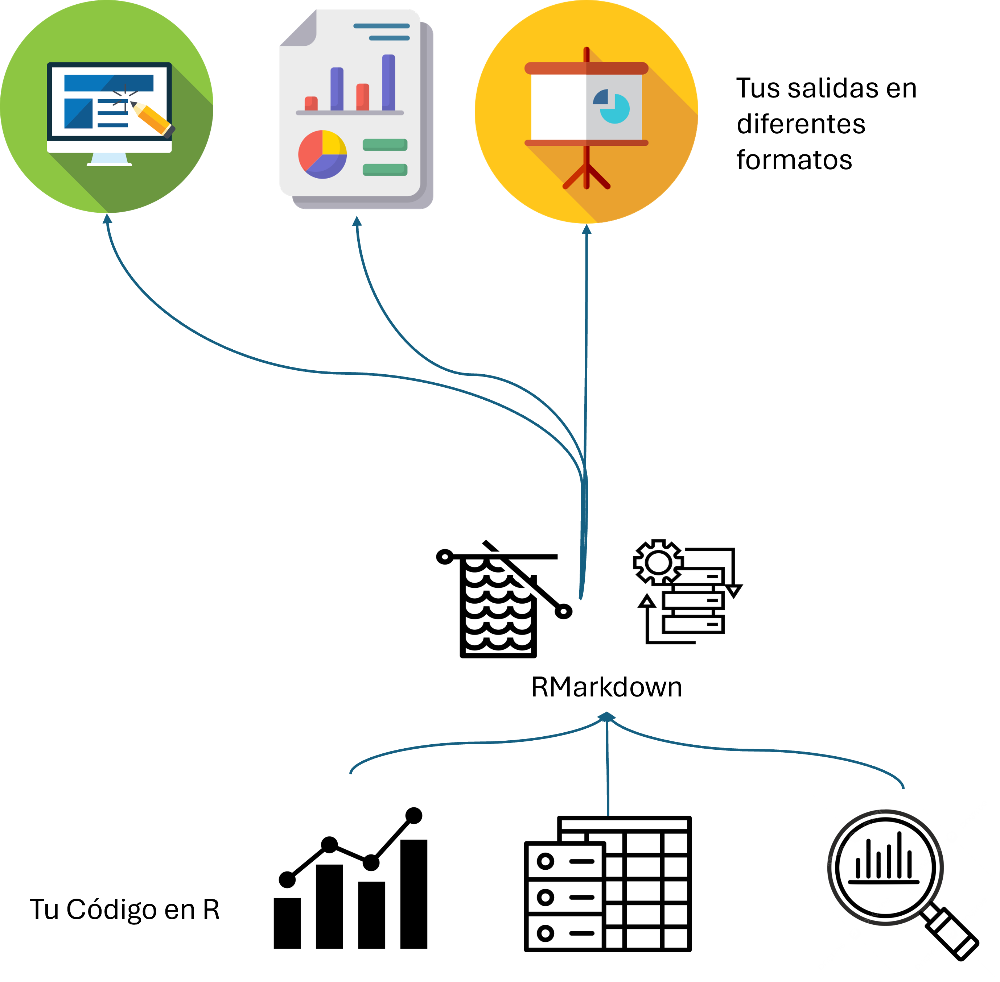
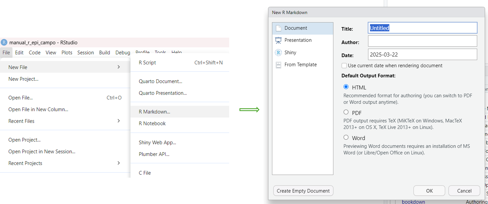
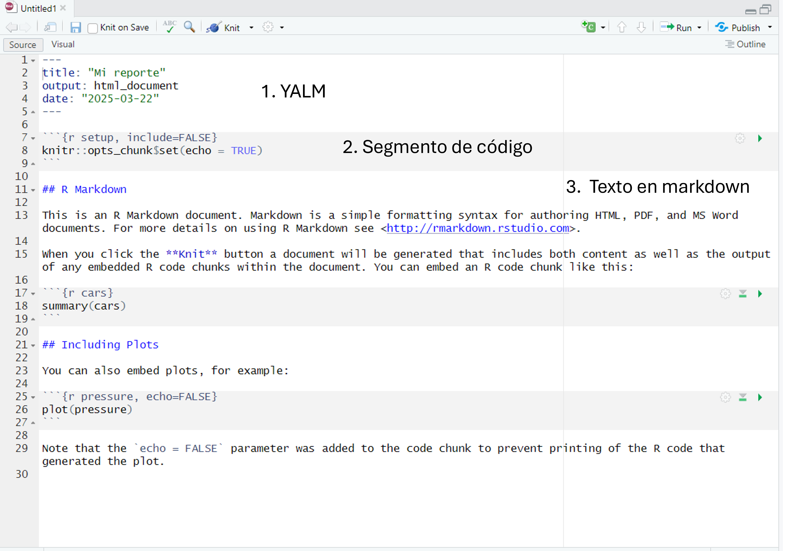

# Tu código R aquí8 Preparación de reporte (integración de las salidas en un documento)
8.1 Introducción a Rmarkdown
En este capítulo vamos a ver como integramos los elementos de nuestro análisis (tablas, gráficos) y la descripción así como la intepretación de los datos. Reportar es uno de los pasos más importantes cuando trabajamos en esta área, y contar con herramientas que nos faciliten esta tarea nos da la gran ventaja de ahorrar tiempo. Por ejemplo poder prepararar un manuscrito, la presentación, (hasta un poster!) en un solo lugar es posible con R a través de RMarkdown que es una herramienta poderosa dentro del ecosistema de RStudio (este manual fue realizado usando RMarkdown).
Para profesionales de la salud que realizan análisis de datos, RMarkdown ofrece una solución ideal para crear informes reproducibles, compartir hallazgos y documentar adecuadamente los procesos analíticos.
En este capítulo, aprenderás cómo utilizar RMarkdown para crear documentos bien acabados en diferentes formatos (docx, pdf, html) que integren análisis estadísticos, visualizaciones y texto.

8.2 ¿Qué es RMarkdown y por qué usarlo?
RMarkdown es un formato que combina la sintaxis de Markdown (un lenguaje de etiqueta) con la capacidad de ejecutar código R. Sus principales ventajas para profesionales de la salud incluyen:
- Reproducibilidad: Los análisis pueden ser replicados exactamente por otros investigadores.
- Transparencia: Todos los pasos del análisis están documentados.
- Integración: Código, resultados, visualizaciones y texto explicativo en un solo documento.
- Múltiples formatos de salida: Generar informes en HTML, PDF, Word, presentaciones y más.
- Control de versiones: Facilita el seguimiento de cambios a lo largo del tiempo.
Para investigaciones en salud pública, ensayos clínicos o análisis epidemiológicos, estas características son invaluables para garantizar la integridad y claridad de los resultados. Para saber sobre markdown entra en este enlace: Guía de Markdown
8.3 Creando tu primer documento RMarkdown
8.3.1 Configuración inicial
Para comenzar con RMarkdown, primero asegúrate de tener instalado el paquete necesario {rmarkdown} y {knitr} (con Rstudio deben de estar ya instalados, pero por si acaso) ’ ### Creando un nuevo documento
En RStudio:
- Haz clic en File > New File > R Markdown
- Se abrirá un diálogo donde puedes:
- Especificar un título (ej. “Análisis de datos epidemiológicos”)
- Agregar tu nombre como autor
- Seleccionar el formato de salida deseado (HTML, PDF, Word)
- Haz clic en OK
RStudio generará una plantilla básica que puedes modificar según tus necesidades.

8.4 Anatomía de un documento RMarkdown

Ahora puedes guardar dentro de tu carpeta de proyecto esta plantilla en formato .rmd (formato RMarkdown). Una recomendación a tener en cuenta es tener todos los archivos asociados a este informe en RMarkdown (base de datos, imágenes, etc.) estén en la misma carpeta del archivo RMarkdown. También los documentos de salidas se generarán dentro de esta.
Un documento RMarkdown tiene tres componentes principales:
8.4.1 1. Encabezado YAML
El encabezado YAML aparece al principio del documento entre líneas de tres guiones (---).
---
title: "Análisis de Factores de Riesgo Cardiovascular"
author: "Tu Nombre"
date: "2025-03-22"
output:
html_document:
toc: true
toc_float: true
theme: united
---Este encabezado controla metadatos y opciones de formato. En el ejemplo, especificamos un documento HTML con una tabla de contenidos flotante.
8.4.2 2. segmentos de código (chunks)
Los bloques de código se definen entre triples acentos graves:
Donde: - nombre_chunk: Es un identificador único (opcional pero recomendado) - opciones: Controlan cómo se ejecuta y muestra el código
Algunas opciones comunes de los chunks:
echo = TRUE/FALSE: Mostrar u ocultar el códigoeval = TRUE/FALSE: Ejecutar o no el códigowarning = TRUE/FALSE: Mostrar advertenciasmessage = TRUE/FALSE: Mostrar mensajesfig.width/fig.height: Tamaño de gráficosinclude = TRUE/FALSE: Incluir o no la salida en el documento final
Ejemplo de un bloque de código para análisis de datos de salud:
library(tidyverse)
library(readxl)
# Cargar datos de pacientes
datos_pacientes <- read_excel("datos_hospital_2024.xlsx")
glimpse(datos_pacientes)En la plantilla que creaste ahora, inserta varios segmentos de códigos para que copies de los scripts que has creado lo vayas poniendo dentro de estos, Ejemplo, en el primer segmento de código que tiene esta plantilla,
knitr::opts_chunk$set(echo = TRUE)pon el código para cargar los paquetes y también el código para cargar las bases de datos.
En los demás segmentos, ve agregando las tablas que creaste usando gtsummary o tabyl, los gráficos con ggplot.
8.4.3 3. Texto narrativo en markdown
El texto se escribe utilizando la sintaxis de Markdown, que permite formatear fácilmente:
- Encabezados:
# Encabezado 1,## Encabezado 2, etc. - Énfasis:
*itálicas*y**negrita** - Listas: Utilizando
-o números - Enlaces:
[texto](url) - Imágenes:
 - Tablas: Usando sintaxis de Markdown
Ejemplo de texto para un informe de salud:
## Introducción
Este análisis examina la **prevalencia de diabetes tipo 2** en nuestra cohorte de pacientes durante el período 2022-2024.
Los factores de riesgo analizados incluyen:
- Índice de masa corporal (IMC)
- Niveles de glucosa en ayunas
- Historial familiar
- Actividad física8.5 Buenas prácticas para RMarkdown en investigación de salud
- Organiza tu código: Usa chunks con nombres descriptivos y agrúpalos lógicamente.
- Documenta las decisiones analíticas: Explica las transformaciones de datos y elecciones estadísticas.
- Controla la visibilidad del código: Usa
echo=FALSEpara informes destinados a no-programadores. - Incluye detalles metodológicos: Documenta las versiones de los paquetes utilizados con
sessionInfo(). - Utiliza el control de versiones: Guarda tus archivos .Rmd en un repositorio Git.
- Estructura clara: Utiliza encabezados y subencabezados para organizar el contenido.
- Crea plantillas institucionales: Desarrolla plantillas con los estilos y logotipos de tu institución.
8.6 Recursos adicionales para profundizar
Para aprender más sobre RMarkdown en el contexto de análisis de datos en salud: